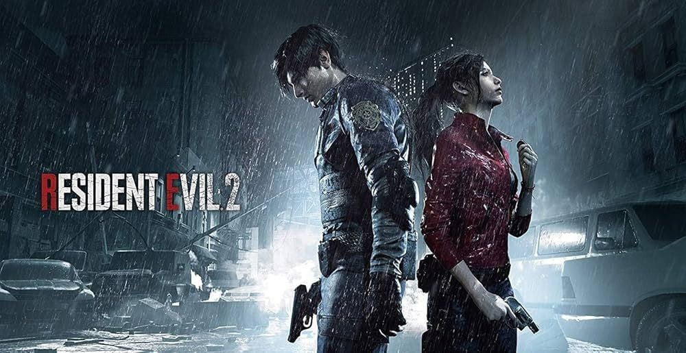
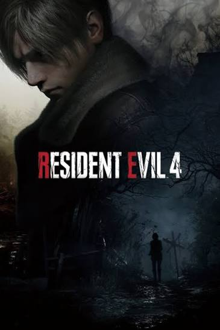
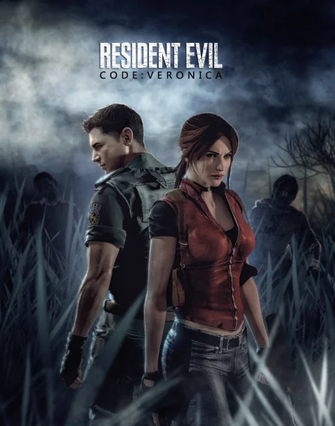

Remakes de Resident Evil
Descubre algunos de los videojuegos más destacados de CAPCOM pertenecientes a la saga Resident Evil.

Resident Evil 2
Remake del clásico de terror y supervivencia, ambientado en Raccoon City durante un brote de zombis.
Categoría: Terror y supervivencia Estado: Disponible
Resident Evil 3
Remake centrado en Jill Valentine mientras intenta escapar de Raccoon City y sobrevivir al poderoso Nemesis.
Categoría: Terror y acción Estado: Disponible
Resident Evil 4
Remake de la aventura de Leon S. Kennedy, quien debe rescatar a la hija del presidente en España.
Categoría: Acción y supervivencia Estado: Disponible
Resident Evil Code: Veronica
Aventura protagonizada por Claire Redfield, quien debe sobrevivir a un nuevo brote relacionado con Umbrella.
Categoría: Terror y supervivencia Estado: Sin remake oficial lanzado